01. 변수와 자료형
변수 : 값을 저장하기 위해 이름을 붙인 저장 공간
자료형 : 자료(데이터) 값의 유형
변수 : 값을 저장하기 위해 이름을 붙인 저장 공간
자료형 : 자료(데이터) 값의 유형
0과 1로 수를 표현함. 각 자리의 값은 오른쪽부터 1, 2, 4, 8… 순서.| 10진수 | 자리 값의 합 | 이진수 표현 |
|---|---|---|
| 10 | 8 + 2 = 2³ + 2¹ | 00001010 |
| 8 | 8 = 2³ | 00001000 |
| 5 | 4 + 1 = 2² + 2⁰ | 00000101 |
| 127 | 64 + 32 + 16 + 8 + 4 + 2 + 1 | 01111111 |
| 255 | 128 + 64 + 32 + 16 + 8 + 4 + 2 + 1 | 11111111 |
| 65535 | 2¹⁵ + 2¹⁴ + … + 2⁴ + 2² + 2⁰ | 11111111 11111111 |
2⁻¹ = 0.5, 2⁻² = 0.25, 2⁻³ = 0.125. 1이 있는 자리의 값을 더해 계산함.| 10진수 | 자리 값의 합 | 이진수 표현 |
|---|---|---|
| 0.5 | 1/2 = 2⁻¹ | 0.1₂ |
| 0.25 | 1/4 = 2⁻² | 0.01₂ |
| 0.125 | 1/8 = 2⁻³ | 0.001₂ |
| 0.75 | 1/2 + 1/4 = 0.5 + 0.25 | 0.11₂ |
| 1.5 | 1 + 1/2 | 1.1₂ |
| 5.75 | 4 + 1 + 1/2 + 1/4 | 101.11₂ |
101.11₂는 정수 부분 101₂ = 5, 소수 부분 0.11₂ = 0.75를 합친 값.5.76은 이진수로 표현하면 소수 부분이 끝없이 반복됨.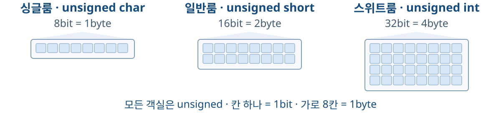
unsigned char로 사용하면 0~255(2⁸−1) 저장 가능.unsigned short: 16비트, 0~65,535(2¹⁶−1) 저장 가능.unsigned int: 32비트, 0~4,294,967,295(2³²−1) 저장 가능.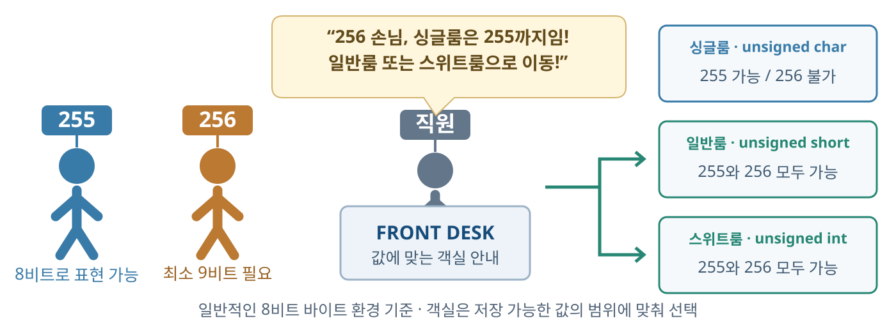
11111111: 8비트 싱글룸에 저장 가능.1 00000000: 9비트 필요. 싱글룸 범위를 벗어나므로 일반룸 또는 스위트룸 선택.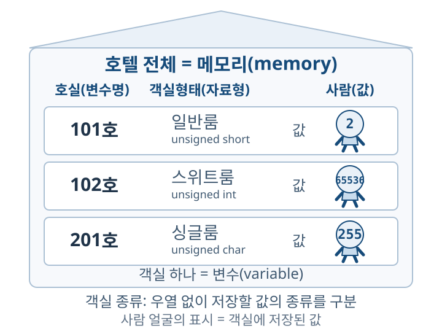
unsigned short room101 = 2;
unsigned int room102 = 65536u;
unsigned char room201 = 255;
| 호텔 비유 | C에서의 의미 |
|---|---|
| 호텔 전체 | 메모리(memory) |
| 객실 하나 | 변수(variable) |
| 객실 번호 | 변수명: room101 등 |
| 객실 종류 | 싱글룸·일반룸·스위트룸: 서로 다른 자료형 |
| 객실 안의 사람 | 값: 2, 65536, 255 |
이 호텔은 모두 unsigned 정수형 사용. 객실마다 저장 가능한 범위가 다름.
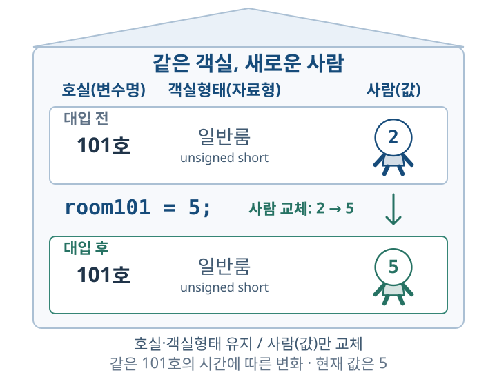
unsigned short room101 = 2; // 선언과 초기화
room101 = 5; // 새 값 대입
| 호텔 비유 | C에서의 의미 |
|---|---|
| 같은 101호 유지 | 변수명 room101 유지 |
| 일반룸 유지 | 자료형 unsigned short 유지 |
| 사람 교체: 2 → 5 | 기존 값을 새 값으로 덮어씀 |
=: 오른쪽 값을 왼쪽 변수에 저장함.room101의 현재 값: 5얼굴에 10이 적힌 손님이 101호에 체크인함.
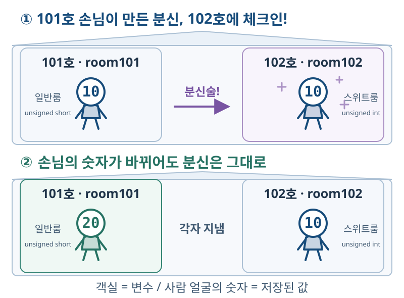
unsigned short room101 = 10;
unsigned int room102 = room101;
room101 = 20;
| 손님 이야기 | room101 | room102 |
|---|---|---|
| 손님이 101호에 체크인 | 10 | 아직 선언 전 |
| 분신이 102호에 체크인 | 10 | 10 |
| 101호 숫자만 20으로 변경 | 20 | 10 |
대입은 그 순간의 값을 복사함. 이후 두 변수는 독립적임.
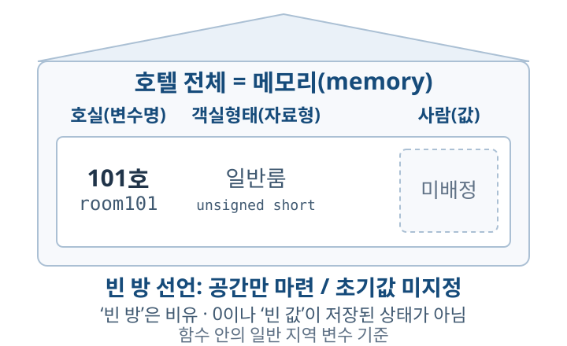
unsigned short room101;
| 호텔 비유 | C에서의 의미 |
|---|---|
| 101호를 준비함 | 변수명: room101 |
| 일반룸으로 정함 | 자료형: unsigned short |
| 아직 사람을 배정하지 않음 | 초기값을 지정하지 않음 |
unsigned short room101;: 정수를 저장할 공간만 마련함.room101 = 2;: 준비된 방에 사람을 배정하듯 값 2를 저장함.int count = 10;
count = 20;
int count;
count = 10;
실행 결과가 여기에 표시됩니다.
실행 결과가 여기에 표시됩니다.
| 자료형(방 종류) | 저장할 값 | 일반 크기(방 크기) | 선언과 초기화 예시 | printf |
|---|---|---|---|---|
int |
부호 있는 정수 | 4바이트 | int num = 2; |
%d |
unsigned int |
부호 없는 정수 | 4바이트 | unsigned int count = 10u; |
%u |
float |
single precision | 4바이트 | float temp = 23.5f; |
%f |
double |
double precision | 8바이트 | double e = 2.718281828459045; |
%f |
char |
문자 코드 또는 작은 정수 | 1바이트 | char c = 'A'; |
%c |
bool |
0 또는 1 | 1바이트 | bool isOpen= 0; |
%d |
| 자료형 | 일반 크기 | 부호 있는 값의 범위 | printf |
|---|---|---|---|
char |
1바이트 | −128 ~ 127 | %hhd |
short |
2바이트 | −32,768 ~ 32,767 | %hd |
int |
4바이트 | −2³¹ ~ 2³¹−1 · 약 ±21억 | %d |
long |
4 또는 8바이트 | 4바이트: int와 같은 범위 / 8바이트: 아래와 같음 |
%ld |
long long |
8바이트 | −2⁶³ ~ 2⁶³−1 · 약 ±922경 | %lld |
| 자료형 | 일반 크기 | 부호 없는 값의 범위 | printf |
|---|---|---|---|
unsigned char |
1바이트 | 0 ~ 255 | %hhu |
unsigned short |
2바이트 | 0 ~ 65,535 | %hu |
unsigned int |
4바이트 | 0 ~ 2³²−1 | %u |
unsigned long |
4 또는 8바이트 | 4바이트: 0 ~ 2³²−1 / 8바이트: 0 ~ 2⁶⁴−1 | %lu |
unsigned long long |
8바이트 | 0 ~ 2⁶⁴−1 | %llu |
| 비트 표현 | 정수 값 |
|---|---|
00000000 |
0 |
00000101 |
+5 |
01111111 |
+127 · 최댓값 |
10000000 |
−128 · 최솟값 |
11111011 |
−5 |
11111111 |
−1 |
0: 0 또는 양수.1: 음수.| 단계 | 8비트 표현 |
|---|---|
| ① +5를 이진수로 표현 | 00000101 |
| ② 모든 비트를 뒤집음 | 11111010 |
| ③ 1을 더함 → −5 | 11111011 |
2의 보수: 비트를 뒤집고 1을 더함.
11111011 = −128 + 64 + 32 + 16 + 8 + 2 + 1 = −5.8비트
signed char를 2의 보수로 표현하는 예. 같은 비트도 자료형에 따라 다르게 해석됨.
| 자료형 | 일반 크기 | 10진 유효숫자 | 양의 정규화된 값 범위 | printf |
|---|---|---|---|---|
float |
4바이트 | 약 6~7자리 | 약 1.18×10⁻³⁸ ~ 3.40×10³⁸ | %f |
double |
8바이트 | 약 15~16자리 | 약 2.23×10⁻³⁰⁸ ~ 1.80×10³⁰⁸ | %f |
long double |
환경에 따라 다름 | double 이상 |
double 이상의 범위 |
%Lf |
float: 단정밀도(single precision)double: 배정밀도(double precision).정밀도는 소수점 아래 고정 자릿수가 아니라, 정수부와 소수부를 합친 유효숫자 수.
c언어는 실수값을 부동소수점(Floating point)이라는 방식을 사용하여 메모리에 저장
같은 값 5.75 저장: 101.11₂ = 1.0111₂ × 2²
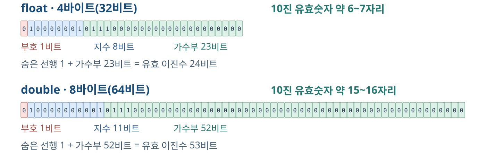
123.456과 1.23456은 모두 6자리.부동소수점(floating point) 방식이라 함float pi_f = 3.14159265358979323846f; // float형은 숫자 다음에 f를 붙인다.
double pi_d = 3.14159265358979323846;
printf("float : %.15f\n", pi_f); // float형 값을 소수점 15자리까지 표시
printf("double: %.15f\n", pi_d); // double형 값을 소수점 15자리까지 표시
출력 예 · 소수점 아래 15자리:
float : 3.141592741012573
double: 3.141592653589793
float는 π의 3.141592 뒤부터 숫자가 달라짐.double은 float보다 더 낮은 소수점 자리(이진수 기준)에서 반올림하여 저장.double이 더 많은 자릿수를 정밀하게 표현함.자료형에 따라 저장 정밀도가 다름. 출력 자릿수를 늘려도 저장 정밀도가 높아지지는 않음.
부동소수점(floating point): 숫자의 세부 값과 소수점 위치를 나누어 표현하는 방식.
| 구성 | 역할 | float · 32비트 |
double · 64비트 |
|---|---|---|---|
| 부호(sign) | 수의 부호 표현 · 0은 양의 부호, 1은 음의 부호 | 1비트 | 1비트 |
| 지수(exponent) | 2의 거듭제곱으로 수의 크기 조절 | 8비트 | 11비트 |
| 가수부(fraction) | 유효숫자의 세부 자릿수 저장 | 23비트 | 52비트 |
float: 0 | 10000001 | 01110000000000000000000
부호 지수 가수부
2에 보정값 127을 더한 129를 저장함 → 10000001₂.1은 생략함 → 실제 유효숫자는 24비트 / 53비트.
double은 세부 숫자를 담는 비트가 더 많아 정밀도가 높음. π처럼 자릿수가 끝없이 이어지는 값은 공간에 맞춰 반올림하여 저장함.
| 구분 | 8비트 환경에서의 범위 |
|---|---|
signed char |
−128 ~ 127 |
unsigned char |
0 ~ 255 |
char |
위 두 범위 중 하나 · 환경에 따라 결정 |
| 문자 | 코드 | 의미 |
|---|---|---|
'\0' |
0 | 널 문자 · 문자열의 끝 |
'\n' |
10 | 줄바꿈(LF) |
' ' |
32 | 공백 |
'0' ~ '9' |
48 ~ 57 | 숫자 모양의 문자 |
'A' ~ 'Z' |
65 ~ 90 | 영문 대문자 |
'a' ~ 'z' |
97 ~ 122 | 영문 소문자 |
'0'의 코드는 48. 정수 0과 구분함.char c = 'A';
printf("문자: %c\n", c);
printf("코드: %d\n", c);
ASCII 호환 환경에서의 출력:
문자: A
코드: 65
%c: 문자 모양으로 출력함.%d: 문자 코드의 정수 값으로 출력함.실행 결과가 여기에 표시됩니다.
| 전구 상태 | 저장할 값 |
|---|---|
| 꺼짐 | 0 |
| 켜짐 | 1 |
bool: 0 또는 1을 저장하는 자료형.bool은 <stdbool.h>에서 제공하는 _Bool의 별칭임.전구의 밝기가 아니라 켜져 있는지 여부를 표현함.
_ 사용 가능. 숫자로 시작할 수 없음.score와 Score는 다른 이름임.#·- 및 int 같은 키워드 사용 불가.student_count, total_price처럼 의미가 드러나는 이름 사용.| 잘못된 이름 | 수정 예 |
|---|---|
7th_val |
val7 |
live_inthe# |
live_in_the_city |
kor year |
kor_year |
변수는 사용하기 전에 미리 선언함.
C99 이상에서는 블록 중간에도 선언 가능.
밑줄로 시작하는 이름은 예약 식별자와의 충돌 가능성 때문에 사용을 피함.
키워드: 언어가 문법적인 의미를 정해 둔 단어.
| 분류 | 예 |
|---|---|
| 자료형 | char, short, int, long, float, double, void |
| 부호·속성 | signed, unsigned, const, volatile |
| 제어 흐름 | if, else, for, while, switch, return |
| 그 밖의 예 | sizeof, struct, typedef, static |
int double = 3;처럼 키워드를 변수 이름으로 사용 불가.main, printf, scanf는 키워드가 아닌 함수 이름임.상수(constant): 코드에서 값이 고정된 데이터. 예: 10, 3.14, 'A'
연산자( operator) : 피연산자(operand)에 특정 연산을 수행하도록 지시하는 기호
표현식(expression) : 피연산자와 연산자 등으로 구성되며, 평가(evaluate)하면 하나의 값이나 결과를 얻을 수 있는 식
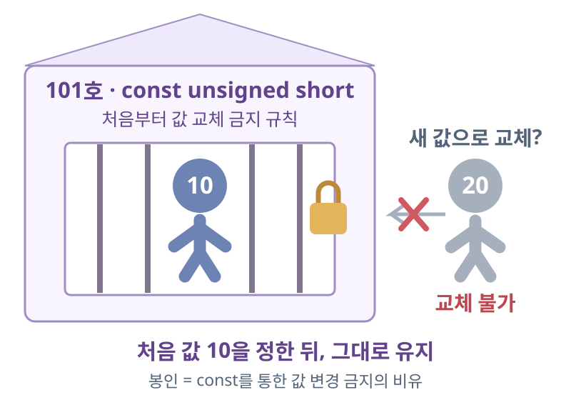
const unsigned short room101 = 10;
room101 = 20;으로 값 변경 불가.
const는 자료형에 붙이는 변경 제한임.
const는 숫자뿐만 아니라 다른 자료형에도 붙일 수 있음.
int guests = 2;
const int MAX_GUESTS = 4;
| 구성 | 의미 |
|---|---|
2, 4 |
코드에 직접 적은 정수 상수 |
guests |
저장된 값을 변경할 수 있는 변수 |
MAX_GUESTS |
const로 선언한 변경 불가 객체 |
실행 결과가 여기에 표시됩니다.
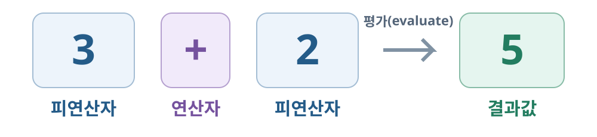
| 용어 | 의미 | 3 + 2에서의 예 |
|---|---|---|
| 연산자 | 계산·비교·대입 등의 동작을 나타내는 기호 | + |
| 피연산자 | 연산의 대상이 되는 값이나 식 | 3, 2 |
| 표현식(식) | 값·변수·연산자 등으로 구성한 표현 | 3 + 2 |
3 + 2의 평가 결과는 5.| 구분 | 피연산자 수 | 예시 | 의미 |
|---|---|---|---|
| 단항 연산자 | 1개 | -price |
price 값의 부호를 반전 |
| 이항 연산자 | 2개 | price * count |
두 변수에 저장된 값을 곱함 |
| 삼항 연산자 | 3개 | 조건 ? 값1 : 값2 |
조건에 따라 두 값 중 하나를 선택 |
-price의 -는 단항, price - discount의 -는 이항.? :는 삼항 연산자에 해당함.-price는 부호를 반전한 값을 얻는 식임. price에 저장된 값 자체는 바꾸지 않음.| 종류 | 기호 | 역할 |
|---|---|---|
| 대입 | = |
값을 저장 |
| 산술 | + - * / % |
합·차·곱·몫·나머지 계산 |
| 복합 대입 | += -= *= /= %= |
계산 결과를 같은 변수에 저장 |
| 증감 | ++ -- |
값을 1 증가·감소 |
| 관계·동등 비교 | < <= > >= == != |
두 값의 관계 비교 |
| 논리 | && || ! |
조건을 조합·반전 |
| 조건 | ? : |
조건에 따라 두 값 중 하나 선택 |
| 비트 논리 | & | ^ ~ |
각 비트에 논리 연산 적용 |
| 비트 이동 | << >> |
비트를 왼쪽·오른쪽으로 이동 |
실행 결과가 여기에 표시됩니다.
실행 결과가 여기에 표시됩니다.
실행 결과가 여기에 표시됩니다.
실행 결과가 여기에 표시됩니다.
실행 결과가 여기에 표시됩니다.
실행 결과가 여기에 표시됩니다.
실행 결과가 여기에 표시됩니다.
실행 결과가 여기에 표시됩니다.
int age = 25;
int student_age = (18 <= age) && (age <= 24);
&&로 연결함.18 < = age < = 24는 수학의 범위 비교처럼 동작하지 않음.&&: 왼쪽이 0이면 오른쪽 평가 생략.||: 왼쪽이 0이 아니면 오른쪽 평가 생략.int people = 0;
int enough = (people != 0) && (10 / people >= 2);
왼쪽이 0이므로 나눗셈을 실행하지 않고
enough에 0 저장. 이를 단락 평가라고 함.
실행 결과가 여기에 표시됩니다.
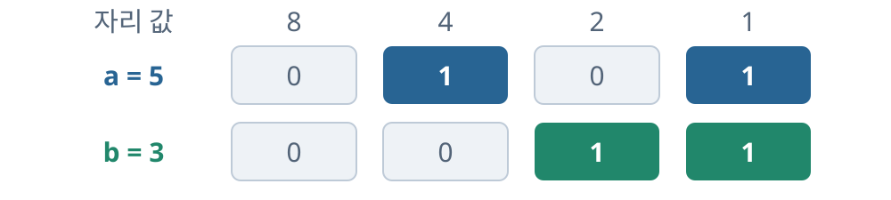
| 비트 논리 | 같은 자리의 두 비트에 적용 | 결과 · 하위 4비트 |
|---|---|---|
a & b |
둘 다 1인 자리만 1 | 0001 → 1 |
a | b |
하나 이상 1인 자리는 1 | 0111 → 7 |
a ^ b |
서로 다른 자리만 1 | 0110 → 6 |
그림은 하위 4비트만 표시. 실제 연산은 자료형의 전체 비트에 적용함.
같은 자리끼리 연산함. 입력 A=5, B=3을 만들어 결과 1 · 7 · 6 확인.
8비트 모형 · NOT 결과는 하위 8비트만 표시함. 입력 0 → 결과 255.
오른쪽으로 1칸 이동 = 2로 나눈 정수 몫, n칸 이동 = 2ⁿ으로 나눈 정수 몫. 부호 없는 정수 기준.
8비트 부호 없는 모형 · 밀려난 비트는 버리고 빈칸은 0으로 채움. C의 int 전체 비트 폭과 구분함.
| 단계 | 하위 8비트 | 비트 이동 | 정수 나눗셈 |
|---|---|---|---|
| 시작 | 00001101 |
13 | — |
| 오른쪽 1칸 | 00000110 |
13u >> 1 → 6 |
13u / 2u → 6 |
| 오른쪽 2칸 | 00000011 |
13u >> 2 → 3 |
13u / 4u → 3 |
| 오른쪽 3칸 | 00000001 |
13u >> 3 → 1 |
13u / 8u → 1 |
| 오른쪽 4칸 | 00000000 |
13u >> 4 → 0 |
13u / 16u → 0 |
1이 버려짐. 6.5가 아닌 정수 몫 6을 얻음.앞 실습에서 8·4·1 자리를 켜서 13을 만든 뒤 이동 칸 수를 늘려 확인함.
실행 결과가 여기에 표시됩니다.
| 순위 | 연산자 · 높은 순서 | 결합 방향 |
|---|---|---|
| 1 | 후위 ++ --, 호출 (), [], . -> |
왼쪽 → 오른쪽 |
| 2 | 전위 ++ --, 단항 + - ! ~, 형 변환, sizeof, 단항 * &, _Alignof |
오른쪽 → 왼쪽 |
| 3 | * / % |
왼쪽 → 오른쪽 |
| 4 | + - |
왼쪽 → 오른쪽 |
| 5 | << >> |
왼쪽 → 오른쪽 |
| 6 | < <= > >= |
왼쪽 → 오른쪽 |
| 7 | == != |
왼쪽 → 오른쪽 |
| 순위 | 연산자 · 앞 표에서 이어짐 | 결합 방향 |
|---|---|---|
| 8 | 비트 AND & |
왼쪽 → 오른쪽 |
| 9 | 비트 XOR ^ |
왼쪽 → 오른쪽 |
| 10 | 비트 OR | |
왼쪽 → 오른쪽 |
| 11 | 논리 AND && |
왼쪽 → 오른쪽 |
| 12 | 논리 OR || |
왼쪽 → 오른쪽 |
| 13 | 조건 ? : |
오른쪽 → 왼쪽 |
| 14 | = += -= *= /= %= <<= >>= &= ^= |= |
오른쪽 → 왼쪽 |
| 15 | 콤마 연산자 , |
왼쪽 → 오른쪽 |
()는 함수 호출을 뜻함.실행 결과가 여기에 표시됩니다.
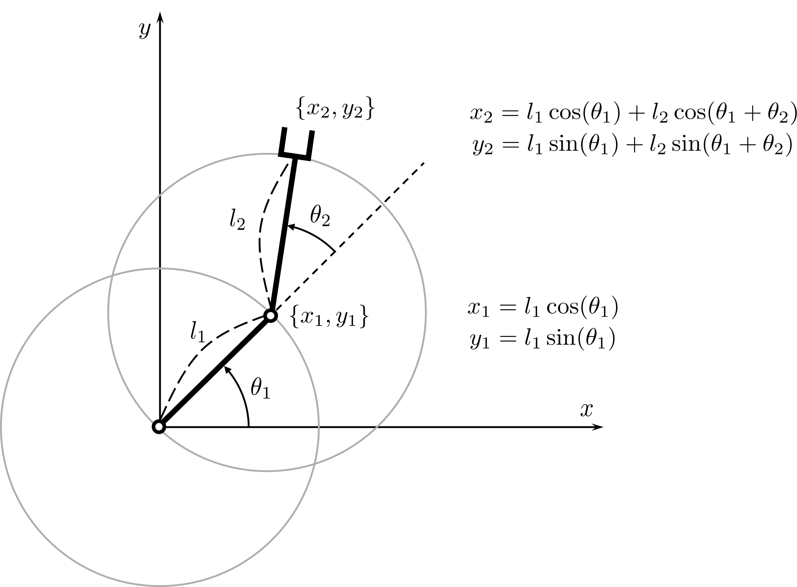
x1x2y2=l1cosθ1,y1=l1sinθ1=x1+l2cos(θ1+θ2)=y1+l2sin(θ1+θ2)
x, y는 그림의 끝점 x2, y2에 해당함.실행 결과가 여기에 표시됩니다.
x = L1 * cos(t1)
+ L2 * cos(t1 + t2);
y = L1 * sin(t1)
+ L2 * sin(t1 + t2);
회색 원: 각 관절을 중심으로 한 링크의 회전 범위
반시계 방향이 +각도. 두 번째 팔의 절대 각도는 θ₁ + θ₂.
앞 장과 같은 길이·각도를 입력하여 출력값 비교. 시각화는 같은 수식을 JavaScript로 계산하며 C 코드와 자동 연동되지 않음.
| 개념 | 기억할 핵심 |
|---|---|
| 변수와 대입 | 값을 저장하는 공간. 대입은 그 순간의 값을 복사함. |
| 자료형 | 저장할 값의 종류·범위·정밀도를 정함. |
| const | 처음 값을 정한 뒤 다른 값으로 변경 불가. |
| 산술·복합 대입·증감 | 값을 계산하거나 기존 값을 갱신함. |
| 관계·논리·조건 | 비교·논리 결과는 0 또는 1. 조건 연산자는 두 값 중 하나를 선택함. |
| 비트 연산 | 각 비트를 조합·반전·이동함. 부호 없는 정수의 오른쪽 1칸 이동은 2로 나눈 정수 몫. |
| 우선순위와 괄호 | 식의 묶임을 확인하고, 의도한 연산을 괄호로 명시함. |